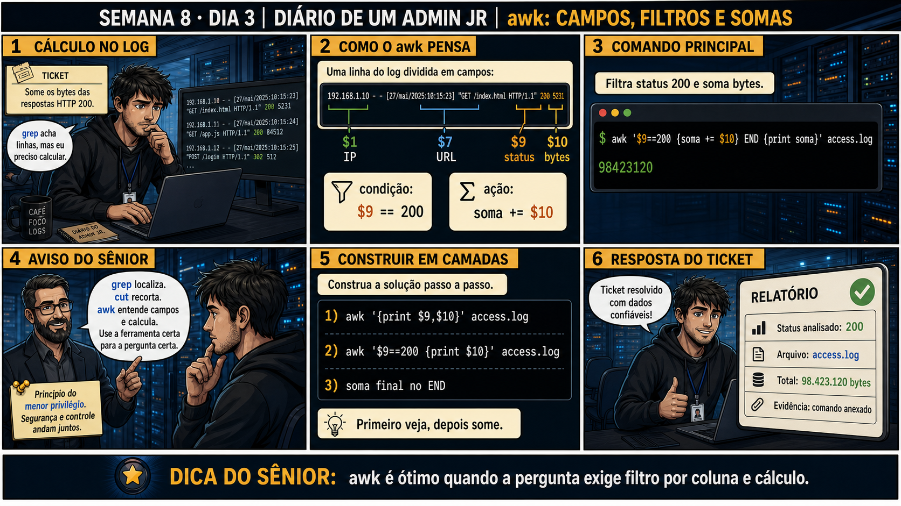

DIARIO DE UM ADMIN JR. | FASE 1 — LINUX, DO BÁSICO AO AVANÇADO
🔗 Conecta com o Dia 1: cut recorta coluna, grep acha linha. Mas nenhum dos dois
CALCULA nada em cima dos dados. Hoje você aprende awk — a ferramenta certa quando a pergunta exige filtrar
por coluna E fazer uma conta em cima do resultado.
🔓 Privilégio de hoje: filtrar e calcular dados de log com awk. Você ganha a
capacidade de responder perguntas que envolvem soma, média ou contagem condicionada por coluna.
Semana 8 · Dia 3 | Nível Júnior
awk: Campos, Filtros e Somas
awk é ótimo quando a pergunta exige filtro por coluna e cálculo
ANTES DE ALTERAR, OBSERVE. DEPOIS DE ALTERAR, VALIDE.

1. O chamado
Ticket: "some os bytes das respostas HTTP 200" no access.log. grep acha
linhas com status 200, mas não soma nada. cut recorta a coluna de bytes, mas não filtra por status. Você
precisa de uma ferramenta que faça as duas coisas ao mesmo tempo.
💡 Passa o mouse nas palavras destacadas pra ver uma dica rápida — clica se quiser a explicação completa com analogia.
2. O sênior te conta
Quarta-feira, Semana 8
Ontem você aprendeu a alterar texto com sed, sempre com prévia e backup. Hoje o problema é outro: você
precisa filtrar E calcular ao mesmo tempo, e nenhuma ferramenta que você já viu faz as duas coisas
juntas.
O chamado que me ensinou isso foi um ticket simples na aparência: "some os bytes das respostas HTTP
200" num access.log com milhares de linhas. Tentei primeiro com o que já conhecia:
grep "200" access.log encontrava as linhas certas, mas não somava nada — eu ficaria com uma
lista enorme de linhas e teria que somar na mão. cut extraía a coluna de bytes direitinho,
mas não filtrava por status — eu somaria bytes de respostas 404 e 500 junto com as 200, um número sem
sentido.
Foi meu primeiro contato de verdade com awk, e a virada de chave foi entender como ele
"pensa" cada linha: divide tudo em campos numerados ($1, $2... até onde a linha tiver), permite uma
condição de filtro ($9==200, "só processe se o campo 9 for 200") e uma ação pra cada linha que passa
(soma += $10, "acumule o campo 10 numa variável"). Filtro e cálculo, na mesma passada, linha por
linha.
O detalhe que quase me pegou: $9 só era a coluna de status NESSE log específico. Cada
formato de log tem sua própria estrutura de colunas — antes de escrever qualquer condição, é preciso
confirmar o formato, com um print $0 simples pra ver a linha inteira primeiro. Hoje você
pratica exatamente essa disciplina: confirmar os campos, construir o filtro isolado, e só depois
adicionar o cálculo por cima.
3. Decodificador de conceitos
Clica em qualquer termo pra ver a definição completa e uma analogia do dia a dia:
4. Ferramentas e leitura da evidência
Elemento do awk
O que observar e por que importa
$9==200
Condição de filtro — só processa a linha se o campo 9 (status) for igual a 200.
{soma += $10}
Ação — acumula o valor do campo 10 (bytes) na variável soma, linha por linha.
END {print soma}
Executa só uma vez, depois de processar todas as linhas, imprimindo o total final.
Resultado esperado: arquivo de teste pronto, com colunas identificáveis, resultado esperado conhecido (200+200 = 3072 bytes).
Por que fizemos isso: saber a resposta certa de antemão (3072) é o que permite validar cada etapa da cadeia com confiança, exatamente como você já fez com cut/sort/uniq.
Cilada comum: testar direto num log real de produção sem saber a resposta esperada — sem isso, fica impossível confirmar se a lógica do awk está certa.
Ação: confirme a linha completa, depois identifique manualmente qual campo é qual.
Resultado esperado: mapeamento correto — status é o campo 7, bytes é o campo 8, nesse formato específico de log.
Por que fizemos isso: confirmar o formato antes de escrever qualquer condição é o que evita o erro do "$9 sempre é status" — cada log tem sua própria numeração de campos.
Cilada comum: copiar um número de campo de outro log/tutorial sem confirmar no arquivo real que você está processando.
Ação: construa o filtro isoladamente e confirme que só as linhas certas aparecem.
$ awk '$7==200 {print}' teste.log
Resultado esperado: só as duas linhas com status 200 aparecem, confirmando que o filtro está correto antes de somar qualquer coisa.
Por que fizemos isso: testar o filtro sozinho primeiro é a "camada" que a Questão 2 vai testar — confirmar visualmente antes de confiar num número final.
Cilada comum: pular direto pra soma sem confirmar o filtro primeiro — se o filtro estiver errado, a soma final "parece" plausível mas está tecnicamente incorreta.
🧑🏫 Aqui entra o Mentor (em breve): se um cálculo do awk não bater com o esperado, este é o ponto onde o chat com o Sênior-IA vai ajudar a debugar a expressão.
Ação: adicione a soma por cima do filtro já validado.
$ awk '$7==200 {soma += $8} END {print soma}' teste.log
Resultado esperado: 3072 — batendo exatamente com o cálculo manual que você já sabia (1024 + 2048).
Por que fizemos isso: ver o resultado bater com a conta manual é a prova final de que a lógica está certa, antes de rodar a mesma expressão num log real de milhares de linhas.
Cilada comum: mudar o filtro E adicionar a soma ao mesmo tempo, sem testar cada mudança separadamente — se algo der errado, fica mais difícil saber qual parte falhou.
Ação: documente comando completo, campo usado como filtro, campo somado, resultado final.
# anote no seu diário de bordo:
Comando: awk '$7==200 {soma += $8} END {print soma}' teste.log
Filtro: campo 7 (status) == 200
Somado: campo 8 (bytes)
Resultado: 3072 (validado contra cálculo manual)
Resultado esperado: registro completo reproduzindo o painel 6 da prancha de hoje.
Por que fizemos isso: documentar qual campo é qual, além do comando, é o que permite reaplicar a mesma lógica corretamente num log diferente, sem repetir a investigação de formato do zero.
Cilada comum: documentar só o comando, sem anotar quais campos correspondem a quê — sem isso, reaplicar a mesma lógica noutro log exige investigar tudo de novo.
6. Antes de ver as opções — tenta responder
🧠 Recall ativo: como o awk "pensa" cada linha de um log?
awk divide cada linha em
campos numerados
($1, $2, $9, $10...), permite uma
condição (ex: $9==200)
e uma ação (ex: soma
+= $10) — filtro e cálculo, juntos, linha por linha.
QUESTÃO 1 de 3
7. Questão comentada — clica numa alternativa
Você precisa somar os bytes transferidos só nas respostas com status 200, num
log com milhares de linhas. Qual é a ferramenta e comando corretos?
💡 Analogia do Sênior para Fixar: O 'awk' é a planilha eletrônica do terminal Linux: entende o texto automaticamente separado em colunas ($1, $2, $3) e permite fazer cálculos matemáticos e filtros condicionais.
QUESTÃO 2 de 3 — cenário de erro real
7.1 O resultado é 98423120 bytes — como validar esse número antes de reportar?
O comando retorna um único número grande. Antes de reportar no ticket, é preciso confirmar que o
cálculo está correto.
Qual é a estratégia de validação correta?
💡 Analogia do Sênior para Fixar: A variável '$NF' no awk é como a última cadeira da fila: aponta automaticamente para a última coluna da linha, não importa quantos espaços ou palavras existam antes.
QUESTÃO 3 de 3 — detalhe que confunde todo iniciante
7.2 "$9 sempre vai ser a coluna de status, em qualquer log?"
Um colega usa $9==200 num log diferente, com formato distinto, e o filtro simplesmente não
funciona como esperado.
Por que isso acontece?
💡 Analogia do Sênior para Fixar: O bloco 'awk '$5 > 90 {print $1, $5}'' é o alarme automático da planilha: filtra apenas os discos cuja quinta coluna de uso ultrapassou noventa por cento.
8. Procedimento profissional
Identifique o formato do log e confirme qual campo é qual (print $0 pra ver a linha inteira primeiro).
Construa a condição de filtro isoladamente e teste.
Adicione a ação de cálculo (soma, contagem) por cima do filtro já validado.
Use END pra imprimir só o resultado final, depois de processar tudo.
Documente o comando completo como evidência do cálculo.
Prevenção
Documente o formato de cada log padrão da equipe (numeração de campos) num README
compartilhado. Isso elimina a necessidade de redescobrir "qual campo é qual" toda vez que alguém precisar
escrever um novo comando awk contra o mesmo tipo de log.
9. Validação e encerramento
O formato do log foi confirmado antes de assumir número de campo.
O filtro foi testado isoladamente antes de adicionar cálculo.
O resultado foi construído e validado em camadas, não de uma vez só.
O comando completo foi documentado como evidência.
Rollback e limites
awk usado só pra leitura/cálculo é somente leitura sobre o arquivo original — não
existe rollback necessário. O risco real é confiar num número sem validar a lógica que o gerou.
💡 Sobre repetição espaçada: "escolher a ferramenta certa pra pergunta certa"
conecta com grep vs find (Semana 2) — cut recorta, grep acha, awk filtra E calcula, cada um com seu papel
específico. O Anki vai conectar os três.
10. Resposta final
Alternativa correta: B. Nesta aula, a decisão correta foi rodar
awk '$9==200 {soma += $10} END {print soma}' access.log, filtrando e somando na mesma passada. O
ponto central do caso é este: awk é ótimo quando a pergunta exige filtro por coluna e cálculo.
🔓 O que você desbloqueou hoje
Capacidade de filtrar e calcular dados de log com awk. Amanhã você aprende
pipes, tee e redirecionamento avançado — pra investigar e provar evidência ao mesmo tempo.